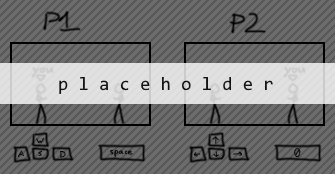

If you've interacted with people that play video games online you've likely run into the term "netcode." Netcode is a broad term for the systems that keep multiple players' games synchronized with each other over the internet. Netcode varies a lot depending on the type of game it's found in, but in this guide we'll be looking specifically at the netcode used in fighting games.
try moving around in this game 
A game is a series of frames, or still images that visually represent the current state of the game. A player influences these game states by providing controller input that changes some part of the game state (typically the player character). A game also has its own underlying rules that can alter the game state without player input, such as gravity causing an airborne character to fall.
An important aspect of most fighting game netcode is that it requires the fighting game to be "deterministic." This means that providing the same exact series of inputs to the game will always produce the same outcome. This is important because it means that the only data that needs to be sent between two players is their inputs. As a side note, this deterministic nature of most fighting games is also what allows their replay systems to work.
try recording a replay
Just like playing back a replay, if both players of a deterministic fighting game have the same sequence of inputs then their games will look identical and stay synchronized. This idea is known as "lockstep" and is the foundation of netcode for all modern fighting games.
So, is lockstep alone a sufficient solution for fighting game netcode? Each player's game requires both players' inputs in order to move to the next frame, so as long as those inputs arrive quickly there should be no problems. However, what happens when the amount of time needed for the inputs to be sent and received exceeds the amount of time between frames?
[...]
Yeah, ew. Unless the connection between the players is stellar, naive lockstep just doesn't cut it. We need some way to move on to the next frame without having to wait for brand new input.
[...]
Hey, now this works. What's changed? In order to avoid having to wait for brand new inputs for every frame, we now collect and delay the local player's inputs for 5 frames (83 ms) in order to give the remote player's input time to arrive. The result is that any network latency under 83 ms will no longer affect how the game feels. This is a huge improvement over naive lockstep, since now all we have to do to make the game playable on any given connection is increase the delay until it works... right?
[...]
[...]